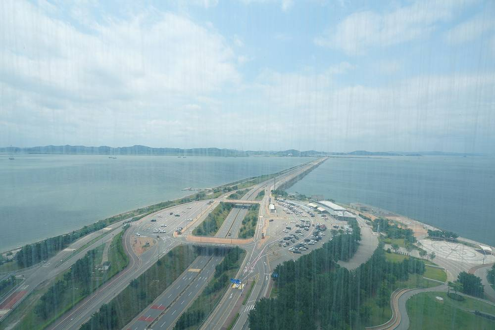

시화·화옹 간척지 최대 3GW 영농형 태양광…땅 57%가 안산 대부도인데 안산시 계획엔 용량·이익공유 '빈칸'

대송단지 2,515ha에서 벼농사 짓는 38개 조합 보상·참여 방식도 정해지지 않아
정부가 시화·화옹 간척지 약 3,300만㎡에 최대 3GW 규모의 영농형 태양광을 추진하는 가운데, 그 땅의 절반 이상을 차지하는 경기 안산시의 계획에는 발전 용량과 이익공유 규모가 빠져 있다는 지적이 나왔다. 시화지구 간척지 4,396ha 가운데 안산 대부동 쪽 대송단지는 2,515ha로 약 57%에 이르지만, 정부 3GW 가운데 안산에 얼마가 배정될지는 공개되지 않았다. 안산시는 정부 발표보다 14개월 앞선 2025년 2월 「대부동 종합발전계획」에 대송단지를 영농형 태양광 집적지구로 만드는 구상을 담았으나, 몇 메가와트를 얼마의 사업비로 언제 짓는지와 수익을 어떻게 나눌지는 적지 않았다. 대송단지에서는 시화방조제 건설 전 어민과 그 자손들이 꾸린 38개 조합이 임시사용 계약으로 벼농사를 짓고 있으며, 계획서는 경작 면적이 줄어드는 임차농의 손실을 발전 수익으로 지원한다는 원칙만 밝혔다. 안산시는 올해 시비 2억 원을 들여 대송단지 기본구상 용역을 진행 중이며, 지역 농민단체는 "농민이 결정할 수 있게 하라"며 참여 보장을 요구하고 있다.
시민에너지 관점
원전 2기에 맞먹는 3GW 사업에서 땅의 57%를 내놓는 지역이 자기 몫과 이익공유 비율을 모른다는 것은 순서가 거꾸로 됐다는 뜻이다. 대규모 간척지 태양광이 외부 자본의 사업으로만 흘러가면 농민 반발과 인허가 지연이 되풀이되겠지만, 경작 조합과 주민이 지분을 갖는 구조를 먼저 정하면 반대는 참여로 바뀔 수 있다. 땅을 오래 일궈 온 38개 조합이 발전 사업의 주인이 될 때 수익이 지역에 남고 영농도 이어진다. 안산시는 기본구상 용역 단계에서 배정 용량과 주민 지분·이익공유 비율을 숫자로 내놓아야 한다.
출처: 경기연합신문 2026-11-07 홍희준 원문 보기
始華・華翁干拓地で最大3GWの営農型太陽光…土地の57％が安山・大阜島なのに安山市の計画には容量・利益共有が「空欄」
大松団地2,515haで稲作を営む38の組合への補償・参加方式も決まらず
政府が始華・華翁干拓地の約3,300万㎡で最大3GW規模の営農型太陽光を進めるなか、その土地の半分以上を占める京畿道安山市の計画には発電容量と利益共有の規模が抜けているとの指摘が出た。始華地区干拓地4,396haのうち安山・大阜洞側の大松団地は2,515haで約57％に達するが、政府の3GWのうち安山にどれだけ割り当てられるかは公表されていない。安山市は政府発表より14か月早い2025年2月の「大阜洞総合発展計画」に、大松団地を営農型太陽光の集積地区にする構想を盛り込んだが、何メガワットをどれだけの事業費でいつ建てるのか、収益をどう分けるのかは記していない。大松団地では始華防潮堤の建設前の漁民とその子孫がつくった38の組合が一時使用契約で稲作を続けており、計画書は耕作面積が減る小作農の損失を発電収益で支援するという原則を示しただけだ。安山市は今年、市費2億ウォンを投じて大松団地の基本構想調査を進めており、地域の農民団体は「農民が決められるようにせよ」と参加の保障を求めている。
市民エネルギーの視点
原発2基に匹敵する3GW事業で土地の57％を出す地域が、自らの取り分と利益共有の割合を知らないのは順序が逆だということだ。大規模な干拓地太陽光が外部資本の事業としてだけ進めば、農民の反発と許認可の遅れが繰り返されるが、耕作組合と住民が持分を持つ仕組みを先に決めれば、反対は参加に変わりうる。長く土地を耕してきた38の組合が発電事業の主人になってこそ、収益が地域に残り営農も続く。安山市は基本構想の段階で、割り当て容量と住民持分・利益共有の割合を数字で示すべきだ。
出典: 경기연합신문 2026-11-07 홍희준 原文を読む
始华、华翁围垦地最高3GW农光互补项目…57%土地在安山大阜岛，安山市规划却未写容量与收益共享
在大松园区2,515公顷种稻的38个合作组织，补偿与参与方式也未确定
在韩国政府推进于始华、华翁围垦地约3,300万平方米建设最高3GW农光互补光伏之际，有指出称，占这片土地一半以上的京畿道安山市的规划中缺少装机容量和收益共享规模。始华地区围垦地4,396公顷中，安山大阜洞一侧的大松园区为2,515公顷，约占57%，但政府3GW中安山将分得多少尚未公开。安山市在比政府发布早14个月的2025年2月《大阜洞综合发展规划》中提出将大松园区打造为农光互补集聚区的构想，但没有写明以多少投资、在何时建设多少兆瓦，以及收益如何分配。大松园区内，始华防潮堤建设前的渔民及其后代组成的38个组合正以临时使用合同种植水稻，规划只提出用发电收益弥补耕地减少的佃农损失这一原则。安山市今年投入市费2亿韩元推进大松园区基本构想研究，当地农民团体则要求保障参与权，称"要让农民来决定"。
市民能源视角
在相当于两座核电站的3GW项目中，提供57%土地的地区却不知道自己的份额和收益共享比例，说明顺序颠倒了。大型围垦地光伏若只作为外部资本的项目推进，农民反对和审批延误就会反复出现；若先确定耕作组合和居民持股的结构，反对就可能转为参与。只有长期耕种这片土地的38个组合成为发电项目的主人，收益才能留在当地，农业也能延续。安山市应在基本构想阶段用数字公布分配容量以及居民持股和收益共享比例。
来源: 경기연합신문 2026-11-07 홍희준 查看原文
Up to 3GW of Agrivoltaics on Sihwa-Hwaong Reclaimed Land: 57% Is in Ansan's Daebudo, Yet City Plan Leaves Capacity and Benefit-Sharing Blank
Compensation and participation for 38 rice-farming groups on the 2,515ha Daesong tract also undecided
As the South Korean government pushes up to 3GW of agrivoltaic solar on about 33 million square metres of the Sihwa and Hwaong reclaimed lands, critics say the plan of Ansan, Gyeonggi Province, which holds more than half of that land, leaves out generation capacity and the scale of benefit-sharing. Ansan's Daesong tract covers 2,515ha, or about 57%, of the 4,396ha of reclaimed land in the Sihwa district, but how much of the national 3GW will be allocated to Ansan has not been disclosed. In its Daebu-dong Comprehensive Development Plan of February 2025, 14 months before the government announcement, the city outlined turning the Daesong tract into an agrivoltaic cluster, yet it did not state how many megawatts would be built, at what cost, when, or how revenue would be shared. On the tract, 38 groups formed by fishers and their descendants from before the Sihwa seawall was built farm rice under temporary-use contracts, and the plan only sets the principle that generation revenue would offset losses for tenant farmers whose cultivated area shrinks. Ansan is spending 200 million won of city funds this year on a basic concept study for the tract, while a local farmers' group is demanding guaranteed participation, saying farmers must be allowed to decide.
Citizen Energy View
When a district supplying 57% of the land for a 3GW project, the equivalent of two large nuclear reactors, does not know its own share or benefit-sharing ratio, the order of things is reversed. If large reclaimed-land solar proceeds only as an outside investors' project, farmer opposition and permitting delays will repeat; settling first on a structure in which farming groups and residents hold equity can turn opposition into participation. Only when the 38 groups that have long worked this land become owners of the power project will revenue stay local and farming continue. Ansan should publish, in numbers, the allocated capacity and the resident equity and benefit-sharing ratios at the concept-study stage.
Source: 경기연합신문 2026-11-07 홍희준 Read the original